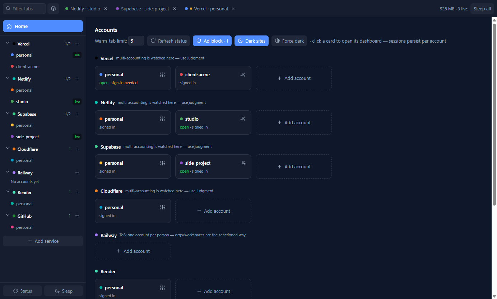
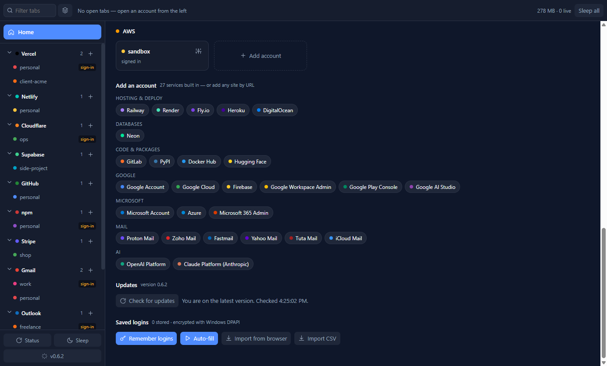
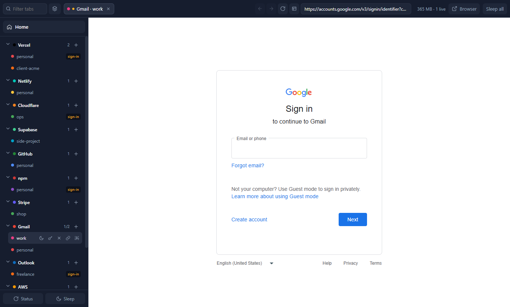

Hosting & deploy 8
- Vercel
- Netlify
- Cloudflare
- Railway
- Render
- Fly.io
- Heroku
- DigitalOcean
Windows desktop app · v0.8.0
Keep Google, Microsoft, AWS, Vercel, Netlify, Supabase, Cloudflare, GitHub, npm, Stripe, Gmail, Outlook and Proton Mail accounts signed in at the same time — each in its own isolated Chromium session. 37 services built in. Any other site by URL.
npx my-provider-dash-manager

A real screenshot from a demo profile. Names and accounts are examples.
The problem
Freelancers, agencies and developers carry a personal account, a client account, a work account — often on the same service. The browser was never built for that.
It is not a browser and not a scraper. It is a container for identities: real dashboards, real sessions, one place.
Inside the app
The rail holds your identities. The strip holds only what is open. Home brings every account back into view without signing anything out.


Screenshots use a demo profile with placeholder account names. The app's UI is shown as captured; the site does not mock up product screens.
Built-in registry
Grouped by category, each with its own colour, sign-in route and multi-account guidance. The rail and Home show only the services you actually use; everything else waits in the Add account picker.
Not on the list? Add service by URL gives any site its own rail row and fully isolated per-account sessions. A JSON plugin manifest can go further and define how to read its API for a status card.
How extensibility worksWhat it handles
Not a dashboard skin over a browser. Each feature is built around the account as the unit of work.
Separate cookies, localStorage, IndexedDB and cache per account. Sign in once; sessions survive restarts and never see each other.
Accounts & sessions 02Providers nest their accounts. Tabs exist only for what is open. Home is always one click — or Esc — away.
Layout & browsing 03Logins typed inside a tab are remembered for that account, refilled on the right origin, encrypted with Windows DPAPI, and importable from browsers.
Password manager 04Optional read-only API tokens light up project counts, names and deploy state on Home cards. Tokens are validated before storage and never leave the main process.
API status cards 05New releases download in the background and install silently when you close the app. Prefer buttons? Turn auto-update off and step through it yourself.
Updates 06EasyList-powered ad-blocking and Dark Reader's engine, both inside each account's session. No extensions to install or keep in sync.
Ad-block & dark modeInstall
Use the command line if you already have Node.js 18+. Otherwise download the installer from GitHub Releases. Both install the same per-user Windows app.
# install or update, then launch $ npx my-provider-dash-manager # installed globally? the alias works too $ mpdm update
From install to signed in
Click Add account at the bottom of the rail, choose a service, name the account, then log in or create one. The real sign-in page opens inside that account's own isolated session.
Google services sign in directly. On other sites, prefer email/password or GitHub over “Continue with Google”, which Google blocks in embedded browsers. The Browser button finishes stubborn flows in your system browser.
Click a tab or a rail row. Everything stays warm and signed in. Optionally connect a read-only API token for a status card, or import passwords from your browser.
Straight answers
The full FAQ covers memory use, password import, SmartScreen, provider terms and what happens to your data.
Yes. Each account gets its own Chromium storage partition, so both stay signed in simultaneously and you switch between them like tabs. Nothing is ever signed out to reach the other.
Roughly 125 MB of private memory per live dashboard (the figure Task Manager reports), on a ~350 MB baseline with everything asleep. The app keeps five tabs warm by default and sleeps the rest; slept tabs stay in the strip and resume on click.
Saved logins are encrypted with Windows DPAPI and bound to the account and the service's own domains. A password typed on an unrelated page reached from a tab is never captured, and a saved password is never filled into a page outside the service's domains. DPAPI protects against another user on the machine, a stolen disk and casual copying; it does not protect against malware running as you, which no desktop app can. Passwords never reach the app's own UI process.
Not yet. The app and its installer are Windows-only. The architecture is cross-platform, so other operating systems stay open as future work.
Stop signing out
One Windows app for every account you own. Free for personal and commercial use; source-available under the project licence.
npx my-provider-dash-manager